1+kk s velkou lodžií v Hradci Králové – malý byt, velké možnosti
Bydlení, investice nebo byt pro dítě. Rozhodnutí je na vás.
Hledáte menší byt v Hradci Králové, který vám nebude diktovat jediný způsob využití?
Právě v tom je síla této nabídky.
Ve 4. nadzemním podlaží kompletně revitalizovaného domu s výtahem nabízím byt 1+kk v osobním vlastnictví, který může být zajímavý jako první vlastní bydlení, byt pro dítě i jako dlouhodobá investice.
A protože je v současné době pronajatý, může do konce roku 2026 zároveň přinášet svému novému vlastníkovi nájemní příjem.
Malý byt. Velká lodžie. A několik možností, jak s ním naložit dál.
1+kk, který nabízí víc, než napovídá dispozice
Celková plocha bytu včetně sklepa a komory činí 31,07 m².
Samotný pokoj má 18,24 m², kuchyňský kout 4,09 m², koupelna s WC 3,21 m² a předsíň 2,69 m².
K bytu navíc patří samostatná komora na chodbě o velikosti 1,68 m² a sklep o velikosti 1,16 m².
U menšího bytu je právě úložný prostor jednou z věcí, které v každodenním životě poznáte velmi rychle.
Tady nemusíte všechno vměstnat do jediné místnosti.
Velká zasklená lodžie jako další prostor navíc
Jedním z největších bonusů bytu je zasklená lodžie o velikosti 6,38 m², která není započítána do uvedené plochy bytu.
Může se stát místem pro ranní kávu, květiny, odpočinek nebo jednoduše příjemným rozšířením obytného prostoru.
U dispozice 1+kk je takto velká lodžie něco, co dokáže každodenní používání bytu výrazně zpříjemnit.
Bydlení, investice nebo byt pro dítě?
Právě tady se otevírá několik scénářů.
Pokud hledáte byt pro sebe, můžete jej po skončení současného nájemního vztahu využít jako vlastní bydlení.
Pokud přemýšlíte několik let dopředu a chcete koupit nemovitost pro syna nebo dceru, může byt do té doby sloužit jako investice.
A pokud hledáte investiční nemovitost, můžete po uvolnění bytu pokračovat v pronájmu a nastavit si další podmínky podle vlastní strategie.
Nekupujete tedy byt s jediným předem daným scénářem.
Kupujete nemovitost, která vám nechává otevřené možnosti.
Nájemní příjem už dnes
Byt je v současné době pronajatý.
Současný nájemní vztah trvá do 31. 12. 2026 a měsíční nájemné činí 11 219 Kč.
Pro nového vlastníka to znamená možnost získávat po určitou dobu nájemní příjem a následně se rozhodnout, jakým směrem chce s nemovitostí pokračovat.
Do konce roku 2026 příjem. Od roku 2027 vlastní rozhodnutí.
Zajímavá možnost pro rodiče
Byty tohoto typu dávají velmi dobrý smysl také rodičům, kteří chtějí řešit budoucí bydlení svého dítěte s předstihem.
Nemovitost můžete koupit dnes, ponechat ji po určitou dobu pronajatou a později ji využít jako startovací bydlení pro syna nebo dceru.
Místo čekání na to, jak budou vypadat ceny bytů za několik let, můžete mít řešení připravené už dnes.
Lodžie, komora a sklep. U malého bytu rozhodující detaily.
U 1+kk nerozhodují pouze metry obytné místnosti.
Rozhoduje také to, kam uložíte sezónní věci, sportovní vybavení, kufry nebo věci, které nechcete mít neustále na očích.
Právě proto je kombinace samostatné komory, sklepa a velké zasklené lodžie tak praktická.
Byt díky tomu nabízí podstatně větší užitnou hodnotu, než by mohla naznačovat samotná dispozice 1+kk.
Revitalizovaný dům a výtah
Byt se nachází v domě po kompletní revitalizaci a k pohodlnému každodennímu fungování přispívá také výtah.
Samotný byt je udržovaný a vybavený.
Aktuální měsíční předpis vlastníka vůči SVJ činí 2 800 Kč.
A co kdybyste mu jednou dali úplně nový vzhled?
Součástí prezentace jsou také vizualizace možného budoucího pojetí interiéru.
Ukazují, jak může tento prostor jednou fungovat jako moderní 1+kk 21. století – s promyšlenou kuchyní, jídelní částí, obytnou a spací zónou, moderní koupelnou, předsíní i příjemně využitou lodžií.
Vizualizace nepředstavují současný stav ani vybavení bytu. Mají ukázat jeho potenciál.
Pro zachování soukromí současného nájemníka jsou v prezentaci použity fotografie pořízené před jeho nastěhováním.
Protože při koupi nemovitosti není důležité vidět pouze to, jak vypadá dnes.
Někdy je ještě důležitější dokázat si představit, co z ní může vzniknout zítra.
Pro koho může být tento byt vhodný?
pro jednotlivce nebo pár hledající vlastní menší bydlení
pro rodiče, kteří chtějí koupit byt dítěti s předstihem
pro začínajícího investora
pro investora hledajícího malometrážní byt v Hradci Králové
pro kupujícího, který chce kombinovat současný nájemní příjem s budoucím vlastním využitím
Základní informace
Dispozice: 1+kk
Podlaží: 5. NP
Plocha bytu včetně sklepa a komory: 31,07 m²
Zasklená lodžie: 6,38 m²
Komora: 1,68 m²
Sklep: 1,16 m²
Dům: po kompletní revitalizaci, výtah
Současný nájemní vztah: do 31. 12. 2026
Měsíční nájemné: 11 219 Kč
Měsíční předpis SVJ: 2 800 Kč
Nabídková cena: 4 190 000 Kč
Malý byt. Velké možnosti.
Vlastní bydlení. Byt pro dítě. Investice.
Tři různé scénáře, jedna nemovitost.
Který z nich bude ten váš?
Labská Kotlina II – město na dosah, pohodlí každý den
Byt se nachází v lokalitě Labská Kotlina II v Hradci Králové, která nabízí velmi příjemnou kombinaci dobré dostupnosti centra, kompletní občanské vybavenosti a pohodlného každodenního fungování.
V bezprostředním okolí najdete obchody, školy, školku, zdravotní služby, restaurace, sportoviště i zastávky MHD. Vše důležité tak máte doslova pár minut od domu.
Centrum bez nutnosti sedat pokaždé do auta
Jednou z velkých výhod této části Hradce Králové je právě dostupnost centra.
Do širšího centra města, k obchodům, službám nebo na vlakové nádraží se pohodlně dostanete pěšky, MHD nebo na kole.
To ocení jak někdo, kdo hledá vlastní bydlení, tak budoucí nájemník. Každodenní fungování zde není závislé na autě, což je u menšího bytu velmi praktická výhoda.
Lokalita pro různé životní etapy
Labská Kotlina II dává smysl jednotlivci, páru, rodičům kupujícím byt dítěti i investorovi.
Pro vlastní bydlení je příjemná díky dostupnosti centra a služeb. Pro rodiče je zajímavá díky školám, MHD a dobrému napojení na zbytek města. A z investičního pohledu je výhodou právě kombinace krajského města, dobré dopravní dostupnosti a kompletního občanského zázemí.
Město ano, ale ne jen beton
V okolí najdete také prostor pro volný čas, sport i krátký odpočinek mimo ruch centra.
Díky tomu lokalita nepůsobí jen prakticky, ale také příjemně pro každodenní život.
Labská Kotlina II je zkrátka místo, kde máte město po ruce, ale zároveň nemusíte dělat kompromisy v běžném pohodlí.
Fotografie
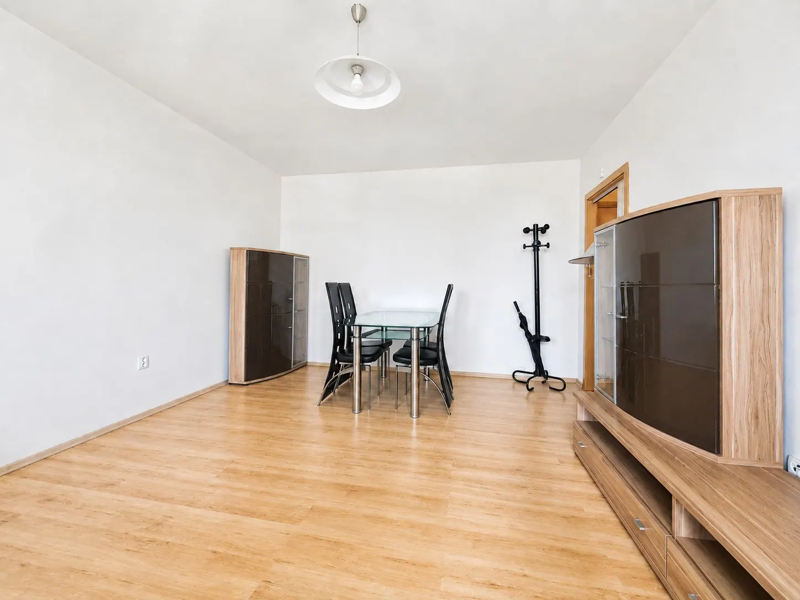
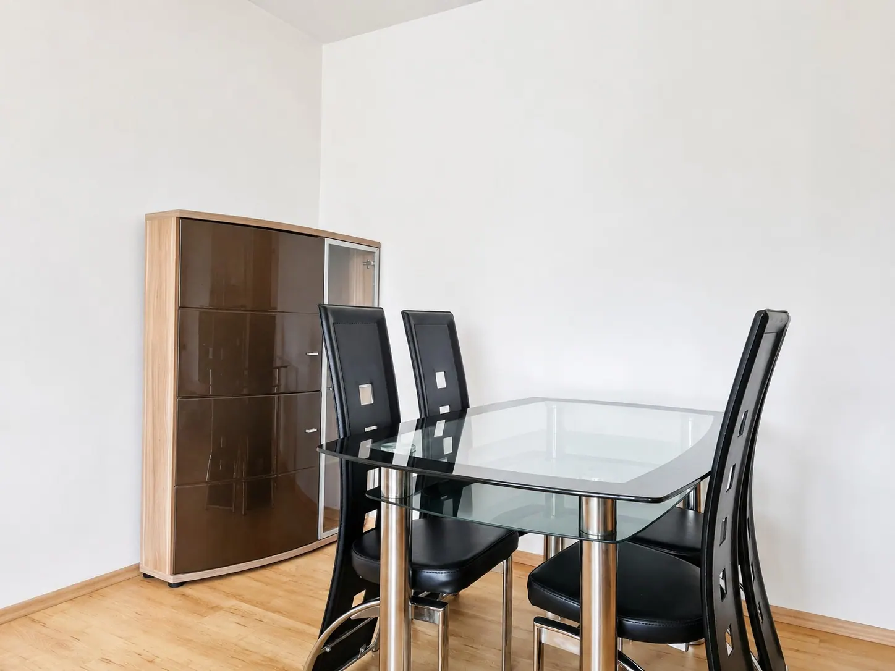
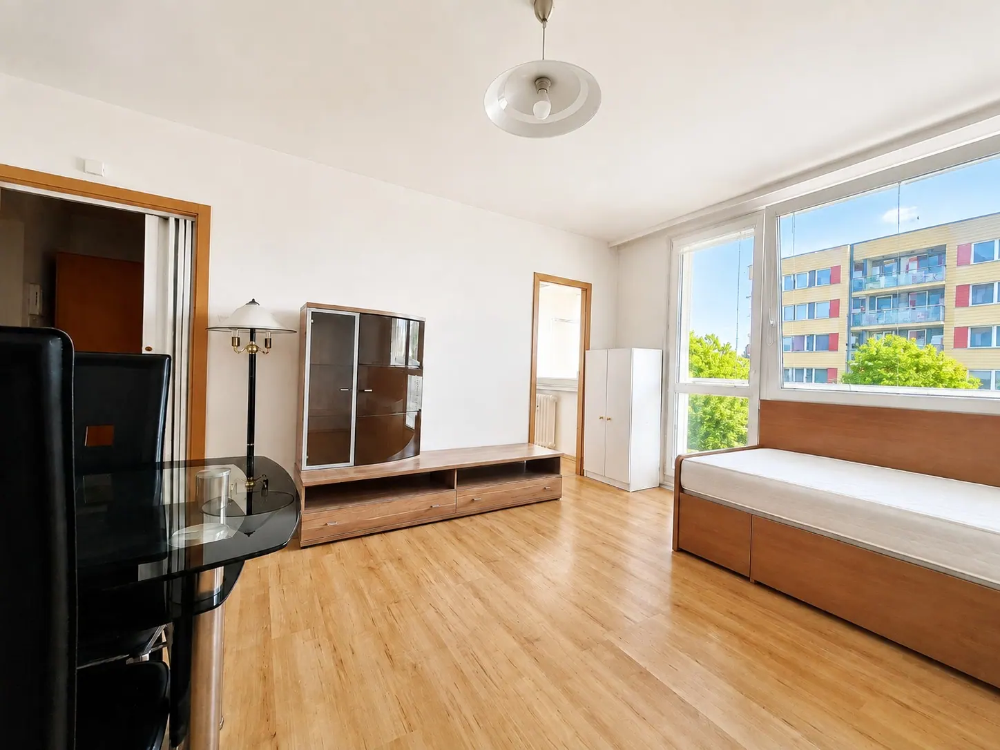
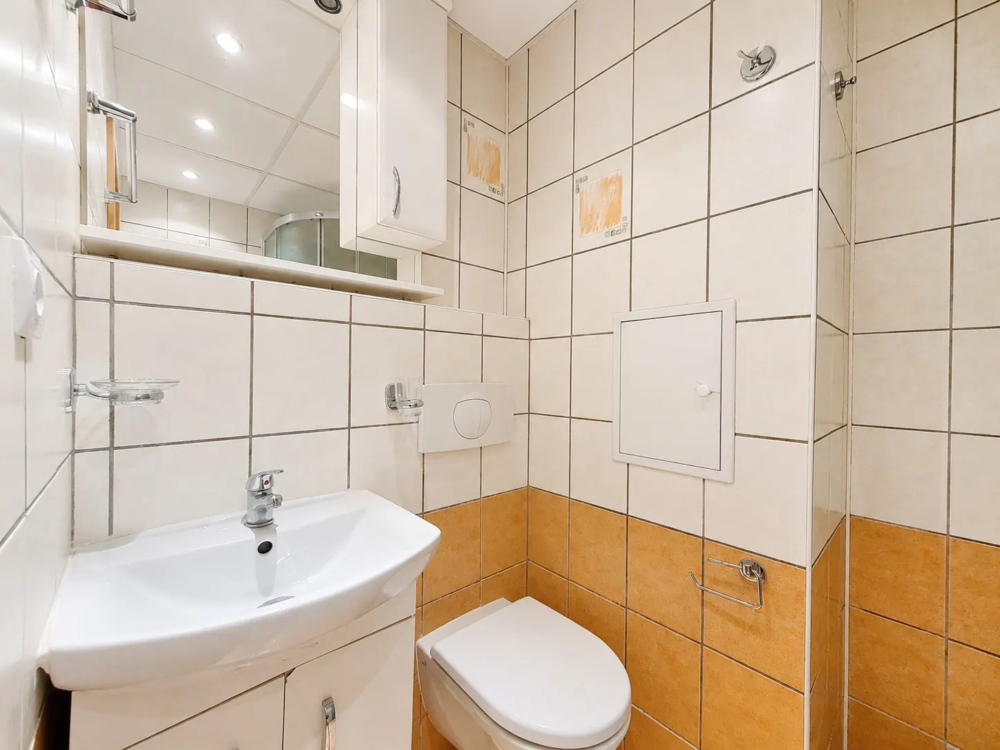
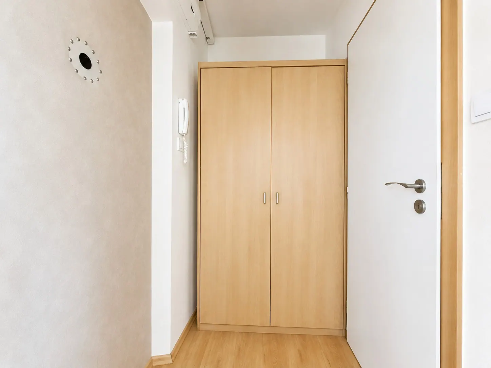
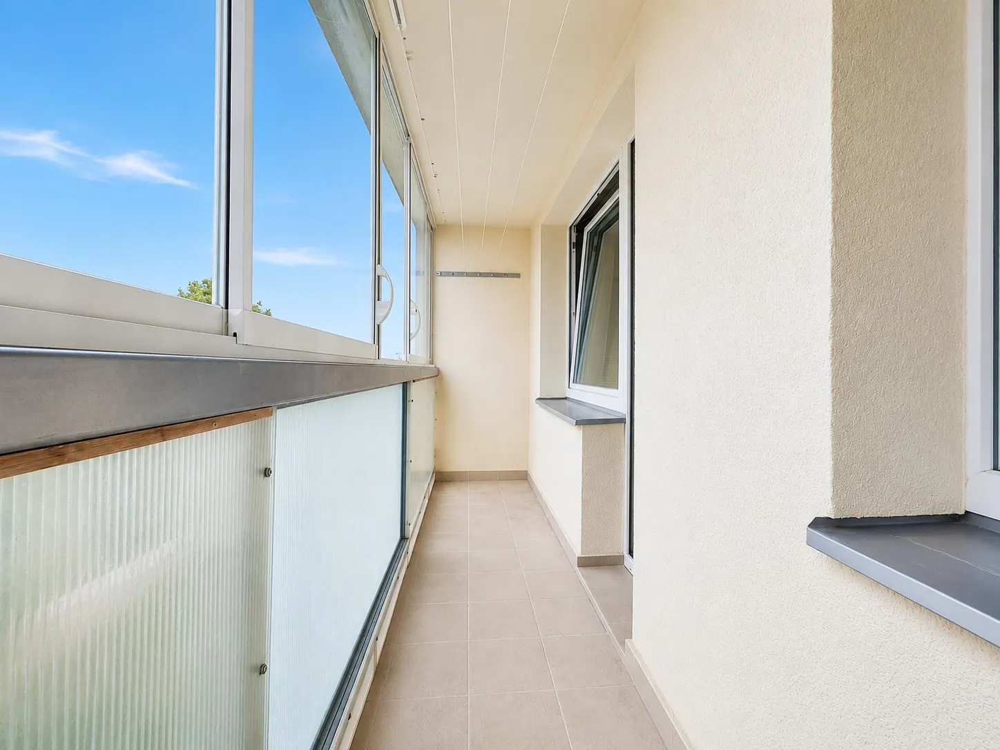
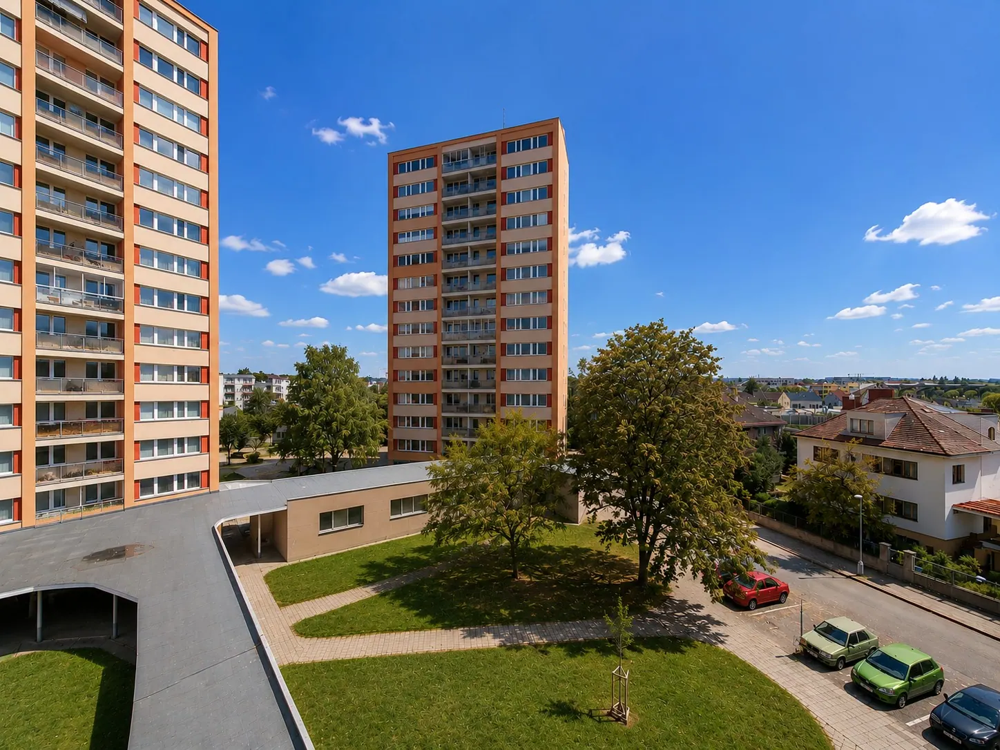
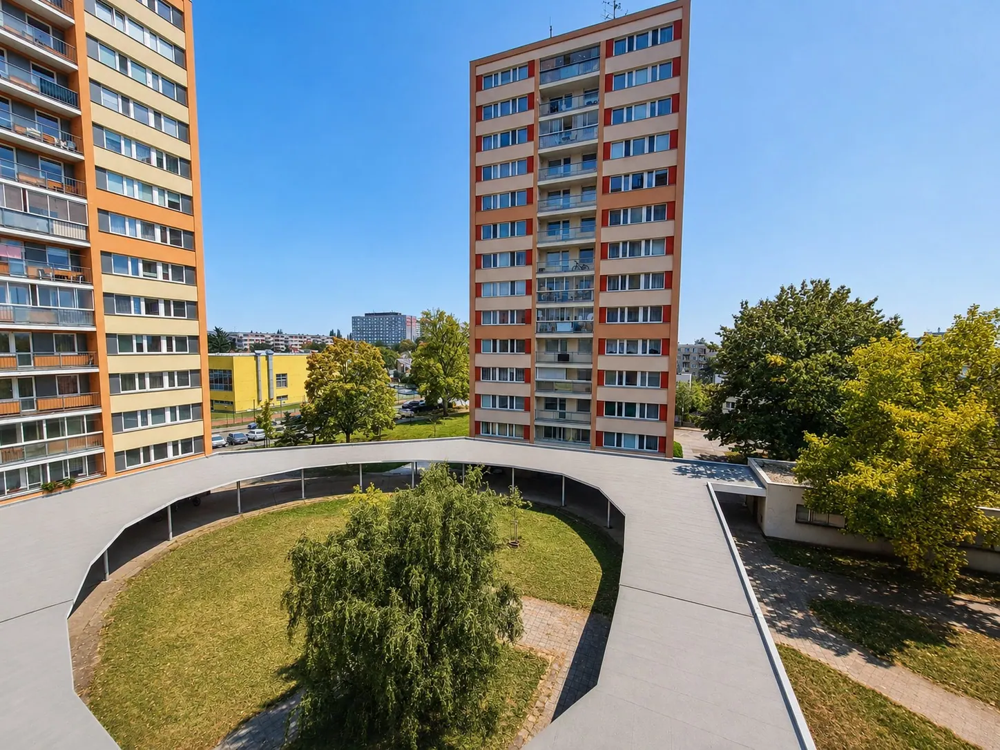
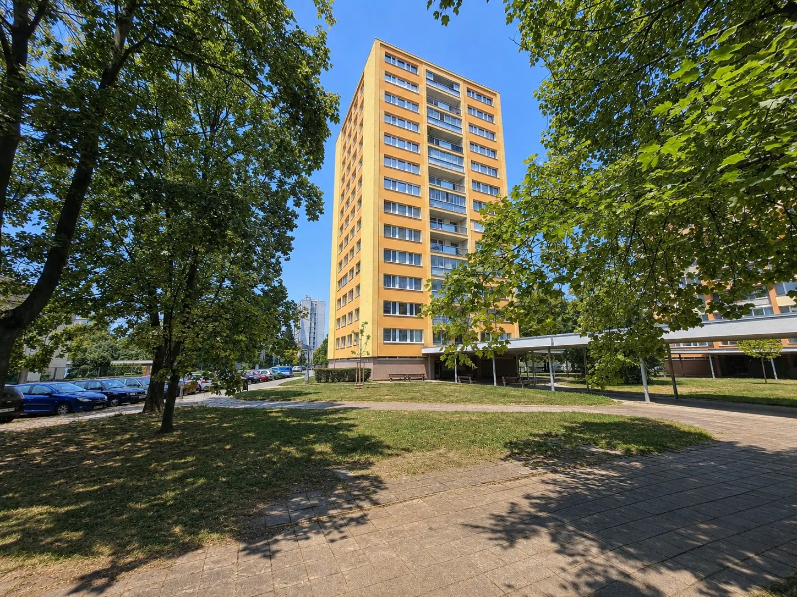
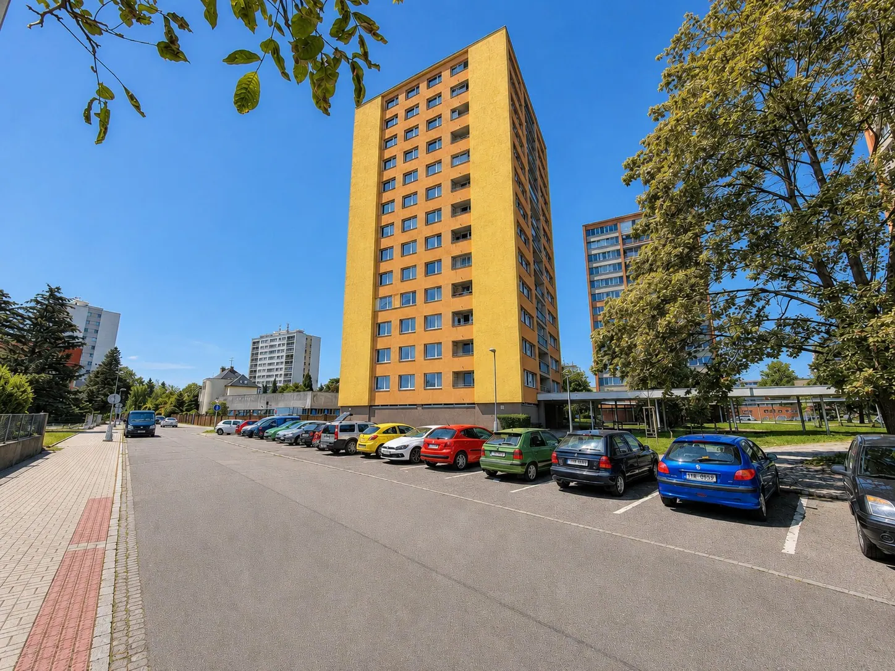
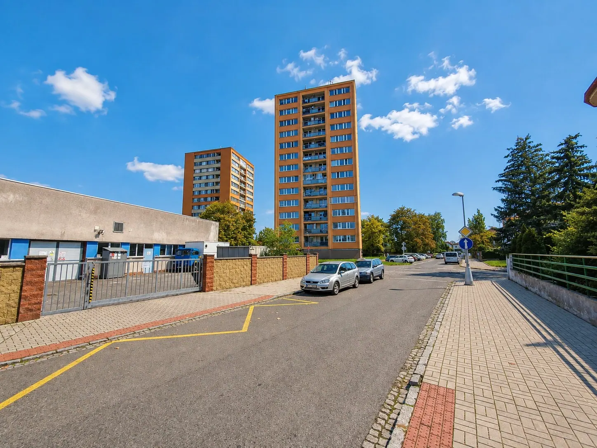
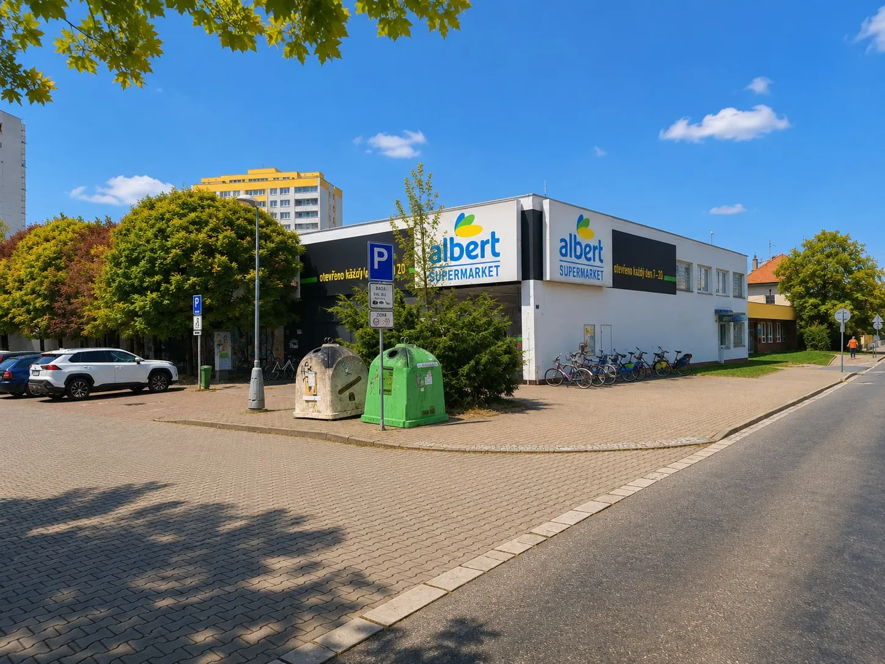
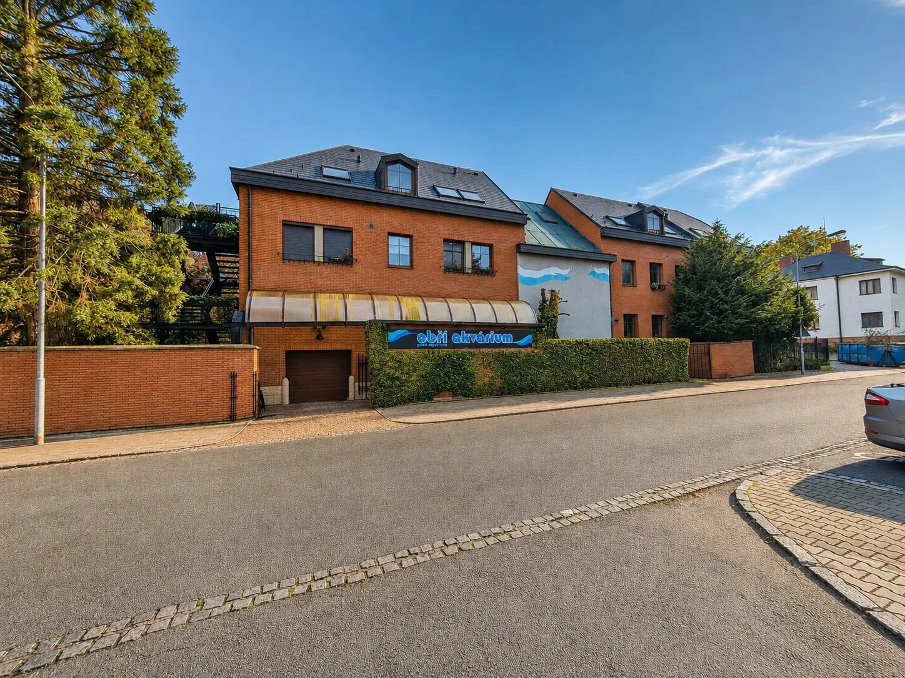
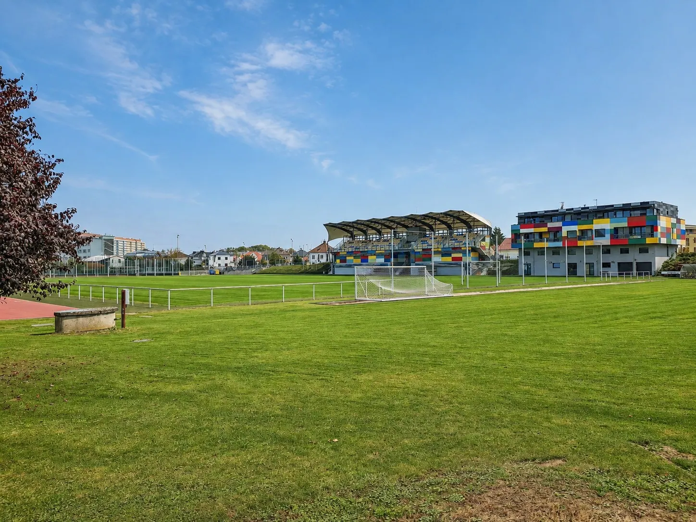


{kind=link}
{kind=link}
{kind=link}
{kind=link}
{kind=link}
{kind=link}
{kind=link}
{kind=link}
{kind=link}
{kind=link}
{kind=link}
{kind=link}
{kind=link}
{kind=link}
{kind=link}
{kind=link}
{kind=link}
{kind=link}
{kind=link}
{kind=link}